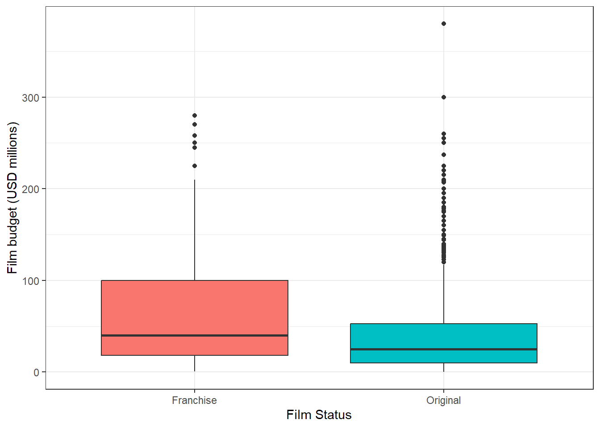
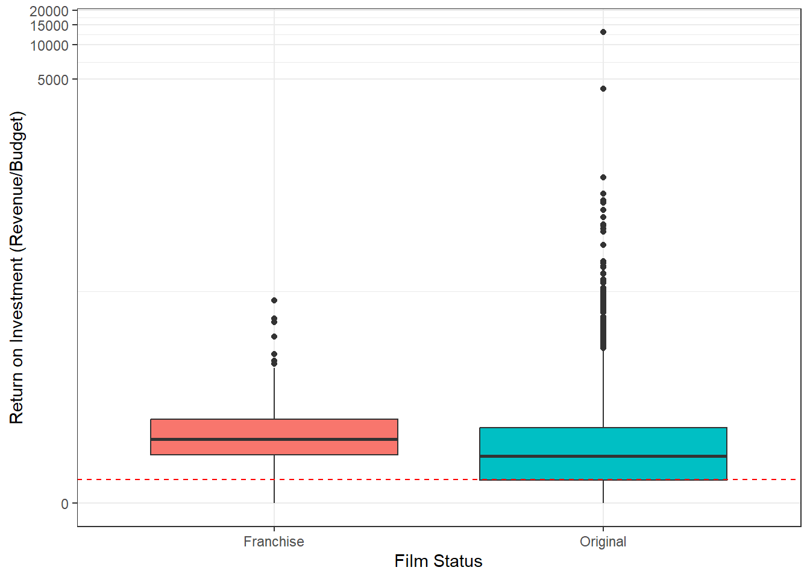
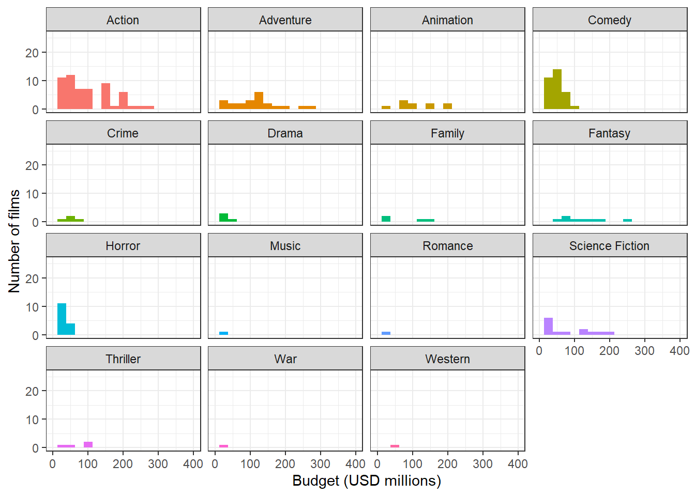
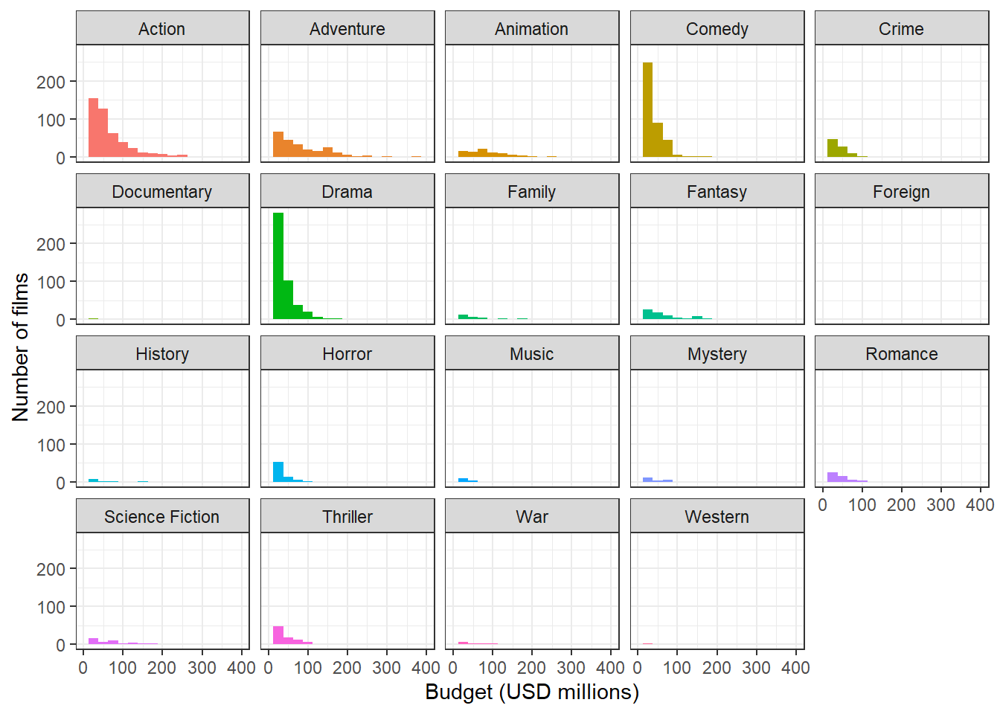
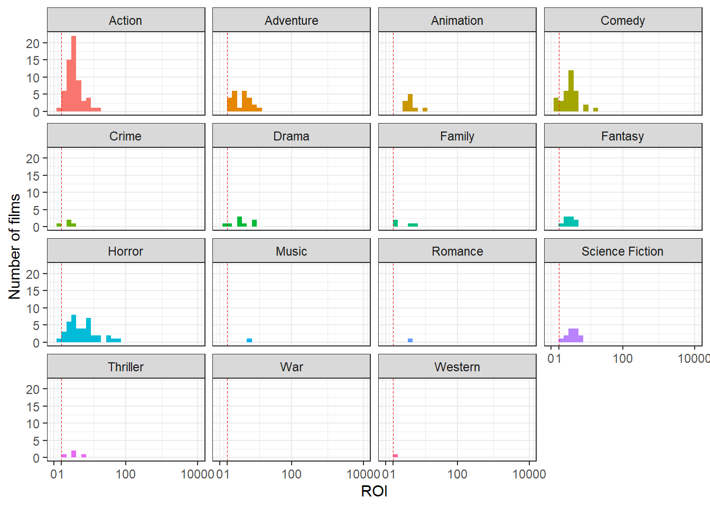
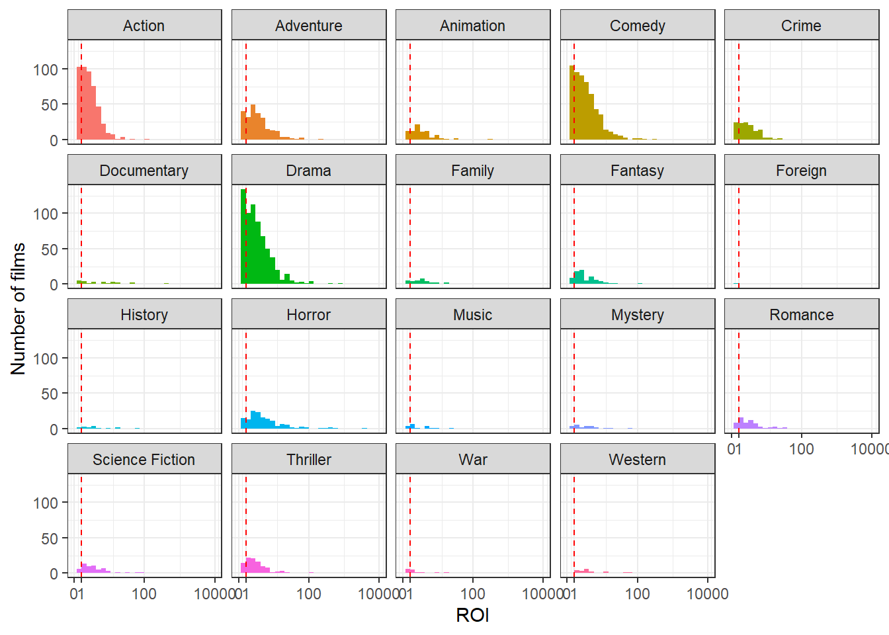
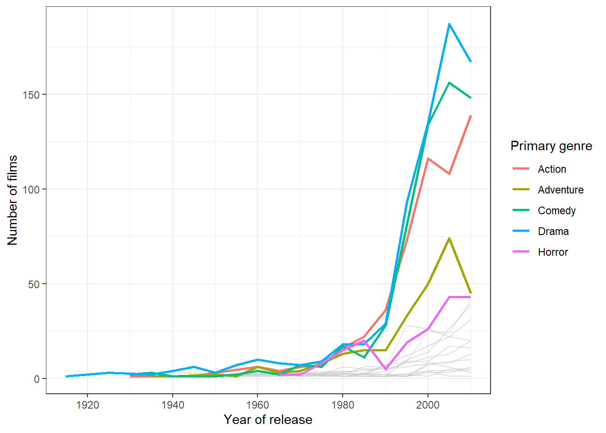

| Statistic | Franchise | Original |
|---|---|---|
| Number of movies | 221 | 2990 |
| Most Common Genre | Action (n = 63) | Drama (n = 731) |
| Mean Production Budget (USD millions) | 65.15 | 39.07 |
| Median Production Budget (USD millions) | 40 | 25 |
| Production Budget Standard Deviation (USD millions) | 63.2 | 42.18 |
| Mean Return on Investment (ROI) | 4.84 | 11.61 |
| Median ROI | 3.36 | 2.21 |
| ROI Standard Deviation | 6.11 | 248.77 |
Assignment-2
Task 1 - Slate Health Check
This is a high-level overview of the financial health and composition of the studios past slate. The code for preparing the data for this task can be found below. Note that we are filtering out any movie with a recorded budget less than 1000 USD from the dataset. This is because most film budgets in the dataset are recorded in actual dollars, but budgets below 1,000 appear to use inconsistent units, with some recorded in hundreds of thousands or millions of dollars. For example, Escape from Tomorrow has a recorded budget of 650 in the dataset. The film’s actual reported budget was $650,000. Rather than attempting to source new budget data for each of the films with a reported budget less than 1000 dollars, which may be inconsistent with the data we already have, we are choosing to discard these unrealistic budgets. Note that in Table 2 this leaves the lowest non-franchise film budget as $7,000; we can trace this back to Primer, a 2004 sci-fi film that really was shot on a $7,000 budget!
We have the same issues with revenue for some movies; for example Dreaming of Joseph Lees has a reported revenue of 7 in the dataset, against a budget of 2,000,000. Most internet sources seem to suggest the actual revenue for the film was somewhere between 7,000 to 13,000 dollars. Obviously if the production budget really was in the millions of dollars, this represents a tremendous failure.
However, in terms of total financial impact to the studio, a film that costs $2,000,000 and doesn’t make that back doesn’t even register. The type of flops we want to make sure we have recorded are movies like Cutthroat Island, which had revenue of ~$10m against a budget of ~$98m. As such, we feel comfortable cutting movies with unrealistically low revenues out of the dataset as well.
This cleaning should leave us with only films where we can be reasonably certain the figures we have are accurate, or at least have the right order of magnitude.
Summary of data
Table 1 provides overall summary statistics for the budgets of films in our dataset, grouped by whether or not they were part of a franchise.
Note 1: Coding for Original vs Franchise
First films in a franchise are labelled as “Original” rather than as part of a franchise, and are therefore included in the data for the “Original” variable (see Table 2, where Paranormal Activity is the Original film with the best ROI, and Paranormal Activity 2 is the Franchise film with the best ROI.)
Additionally, some films that are clearly part of a franchise are not labelled as such in the dataset; all 4 Pirates of the Caribbean movies are labelled as Original movies, for example.
As such, the below figures should be taken as indicative of overall trends only, not treated as absolute truths.
Table 2 contains more specific informatio i.e. maximum and minimum costs, best and worst ROIs, etc. Movie title is presented in italics alongside the figures.
| Statistic | Franchise | Original |
|---|---|---|
| Max Production Budget (USD millions) | 280 Avengers: Age of Ultron |
380 Pirates of the Caribbean: On Stranger Tides |
| Minimum Production Budget (USD) | 852,510 4 Months, 3 Weeks and 2 Days |
7,000 Primer |
| Best ROI | 59.17 Paranormal Activity 2 |
12890.39 Paranormal Activity |
| Worst ROI | 0 5 Days of War |
0 The Adventurer: The Curse of the Midas Box |
Budget and ROI plots


From the plots in Figure 1, and given what we know about how films are coded (Note 1), we can draw some conclusions from the above plots:
- Sequels are generally more expensive to make than original films
- Sequels are generally a safer bet than original films; they have a higher ROI on average, and are less likely to fall below an ROI of 1 (meaning they generally at least make their money back)
- Original films have a higher ceiling for ROI
- This is probably at least somewhat a function of point 1
- Original movies are often made for smaller amounts, and if an original movie is a surprise hit and does reasonably well at the box office on a small budget, ROI will look enormous
But what about genre? Does that have an effect on movie finances?




We already knew from Table 1 what genres appeared the most for Franchise and Original movies. Figure 2 shows that while Drama is the most popular genre for Original films, Action isn’t far behind in terms of the number of movies made. Figure 2 (b) also might explain why Drama is such a popular genre for Original movies; there’s a lot of low-budget movies Drama movies being made! The same budget pattern can be seen for Original Comedy films, although interestingly they seem to differ in terms of ROI pattern. It seems more likely that you’ll make your money back on an original comedy than on an original drama. The same is not true for franchise comedies; comedy sequels seem to be the riskiest investment, with a much higher percentage of films falling below the magic ROI equals one line than for any other Franchise genre.
Slate composition over time
As we saw in Figure 2, there are a lot of genres in our dataset, many of which don’t have many films at all. In order to explore shifts in slate composition, we just want to look at our top genres so the plot doesn’t become a tangled mess. The number of genres chosen was eyeballed from what looked relevant in the plots above (landed on 5), and those genres are:
- Action
- Adventure
- Comedy
- Drama
- Horror
Worth noting is that although we have some data from 2015 on, it is not complete data and is therefore not shown in Figure 3. It is unclear if the data we have from 2014 is fully complete, and some of the drops in numbers seen for genres like Adventure and Drama should therefore be taken with a grain of salt.

Task 2
Budget data are often skewed, and the median is often more meaningful than the mean when describing a budget for typical franchise and original categories. Here I will be using bootstraping to find 95% interval estimate for the difference in median budget between the two groups. As bootstraping simulates repeated samples from a population like the csv provided here, it can help us to describe the uncertainity in the data.

So, the original franchise status have the lower median. Now, the point estimate of the data is 1.8^{7}.
Now, bootstraping using function and loop:
The percentile bootstrap confidence interval of the data is 10^{7} and 2.6^{7}. The interval suggests that the population median difference is plausible between these values based on the data and bootstrap method.
Does it verify leadership concern?

This shows that the median difference is well above zero which supports the concerns of the leadership of franchise slate absorbing much larger budgets than original slate.
Summary
The median is the best way to summarise the budget data as they are always right skewed and using mean won’t provide any acceptable information. We needed to know about the difference in median of the two facets of franchise status to confirm the concern of the leadership about the baised budget allocation towards franchises. By boostraping the median difference of the franchise_status categories and creating a histogram of it showed that the median difference is well above zero (near 18 Million) which confirms the concern about budget allocations.
Advice
The advice to the leadership is to focus on original movies and gradually increase the budget allocation for them and compare the profits generated by both categories and simultaniously, find a optimised allocation stratergy that maximises the profits for the company.
Task 3
Part 1: Production Budget Modelling
With the goal to construct a model that models an appropriate movie budget distribution, a competitor budget analysis was conducted as a credible reference point in line with industry standards. This was performed by sampling the budgeting model from Universal Pictures Studios, which is a direct industry competitor, and fitting a realistic probability model for Meridian to follow.

After data processing, the budget distribution is right skewed and only contain positive values. Therefore, exponential, Gamma, Log normal and Weibull distribution can be selected for model evaluation.

The qq plot indicates normal and log normal are the worst fits as tails deviate the most from the reference line. The Exponential and Gamma model have the best fist as the right tail have the smallest distance from the reference line and most of the points overlap with the line.
| model | df | AIC |
|---|---|---|
| budget_gamma | 2 | 2320.146 |
| budget_weibull | 2 | 2320.598 |
| budget_exp | 1 | 2332.402 |
| budget_lognormal | 2 | 2349.159 |
| budget_normal | 2 | 2454.148 |
The Gamma model has lowest AIC, which paired with the fitting of the qqplot, which suggests that it is the best at fitting budget data.
Part 2: Downside Risk Analysis for Action Movie ROI
Action movies have been established as capital-intensive to produce, which can be proved as risky for budget investment in order to yield significant revenue. As a result, risk analysis into the bottom performing 25% movie ROI was performed across the entire film industry to model conservative target ROI to aim for,
The observed 25% percentile of Action Movie ROI was 0.576
| Calculation_method | Lower_Bound | Upper_bound |
|---|---|---|
| Percentile bootstrap | 0.4634604 | 0.6787467 |
| Bootstrap SE (t) | 0.4593596 | 0.6926404 |


| method | gap_below | gap_above | width |
|---|---|---|---|
| Percentile bootstrap | 0.1125396 | 0.1027467 | 0.2152862 |
| Bootstrap SE (t) | 0.1166404 | 0.1166404 | 0.2332809 |
Both methods to calculate the confidence interval use the bootstrapped sample, which assumes the sample of Action films is representative of the population. Overall, the results were similar with the percentile interval (0.463, 0.679) and the standard error interval (0.460, 0.693) overlapping significantly.
The percentile method does not consider symmetry as it takes the 2.5th and 97.5th percentiles directly from the bootstrapped distribution, while the bootstrapped standard error method assumes the distribution is symmetric and approximately bell-shaped which places the lower and upper bounds equidistant from the observed 25th percentile (0.576). The Standard Error method slightly overstated the upper bound in comparison to the percentile bootstrap estimate while maintaining similar estimates for the lower bound. This may have been because the bootstrapped distribution is slightly left skewed where the percentile bootstrap method displays a larger gap between the observed estimate and the lower bound than the upper bound. The Standard error method also had a larger width in the confidence interval likely due to the larger tails, which increase the estimated Standard Error as a result. Since the percentile method does not rely on the symmetry assumption being accurate, it is best to use this method although both methods yielded similar results.
Summary
Based on the analysis, it is recommended to select the Gamma distribution for the simulation. It had the best fit for the budget data as it matched the QQ-plot reference line the closest and had the lowest AIC value after evaluating five different models. It captured the right skew in budgets where few movie budgets had more expensive budgets compared to the majority of movies.
In this sample, 25% of action films had an ROI of 0.576 or lower. We are 95% confident the true 25th percentile of the ROI for all action films across all studios lies between 0.463 and 0.679. For a conservative risk figure to plan around, Finance should consider 0.463 (46.3% return) for an underperforming Action film.